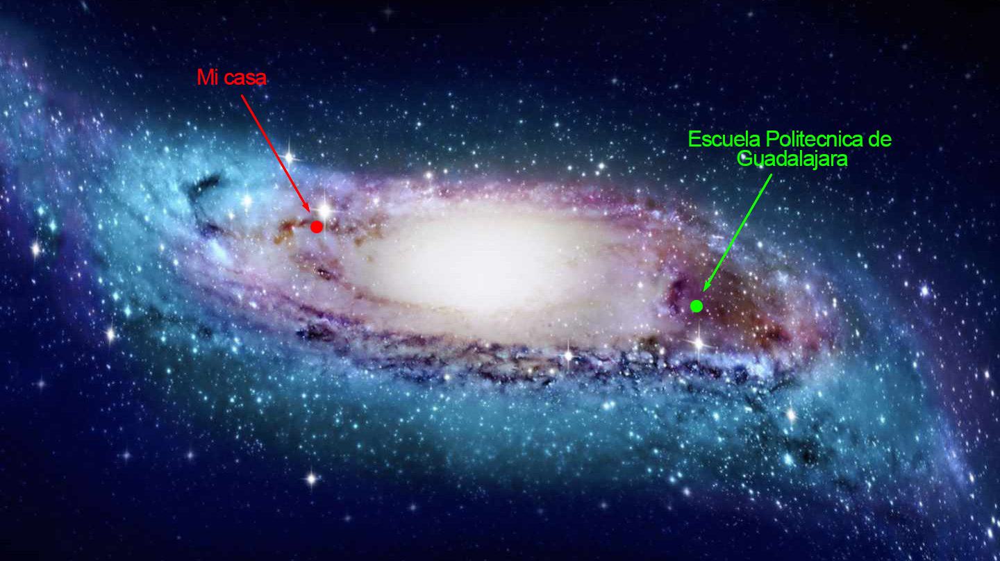

Soy Isaac Alain Benavides Hernandez, estudiante de la carrera Tecnologo Profesional en Sistemas Informaticos en la Escuela Politecnica de Guadalajara, a través de estos 8 semestres de formación academica he tenido muchas experiencias, tanto buenas como malas, he conocido a muchas personas, aprendido muchas cosas nuevas, he obtenido experiencia laboral, he tenido muchas experencias dentro de la Escuela Politecnica de Guadalajara, voy a mostrar en la siguiente página web algunas de las cosas que aprendi a hacer en la Escuela Politecnica de Guadalajara. Y debajo de este parrafo agregare un texto que no tiene nada que ver con lo anterior para mantener la simetria.
En esta época dentro de tres años el día 12 de mayo a las 10 de la mañana en una pequeña isla que está a 9 kilómetros de la capital del sur, dos individuos poderosos aparecerán. Serán unos terribles monstruos que nadie dominará y todos creerán que no son de este planeta. Son androides cibernéticos y su creador es uno de los científicos locos de la famosa Patrulla Roja, el doctor Maki Gero.
La distancia entre mi hogar y la escuela varias veces a sido un verdadero martirio, ya que me toma aproximadamente 1 hora con 15 minutos llegar de mi casa a la escuela y viceversa. Pero bueno, 17.8 Kilometros no se recorren tan rapidamente (aún). Sin embargo, el tiempo que hacia en camión, lo aprovechaba debidamente, no leyendo ni cosas por el estilo, dormirse en el camión es una experiencia por la cual los estudiantes deben de pasar minimo una vez, en mi caso, era cada vez que tenia clase a las 7 de la mañana.
Mi aprendizaje ha sido un repertorio muy amplio, exceptuando las materias base de Bachillerato como Matematicas, Español, entre otras. Aprendí mucho en las materias especializantes como: Logica y conjuntos, Desarrollo de software, Desarrollo de Aplicaciones Web, Bases de datos. Y en adición, he aprendido mucho por mi cuenta para poder perfeccionar mis conocimientos adquiridos, o iniciar nuevos proyectos, como por ejemplo: Python, JavaScript, PHP, manejo de Linux, entre otras cosas.